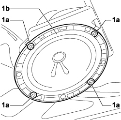
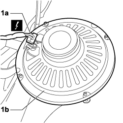

5570T91 FRONT SIDE SPEAKER (ONE), LEFT OR RIGHT - R.R. WITH DOOR PANEL REMOVED
- Path
- Procedures > 55 ELECTRICAL EQUIPMENT > 5570 ACCESSORIES > 5570T car radio and car telephone > 5570T91 FRONT SIDE SPEAKER (ONE), LEFT OR RIGHT - R.R. WITH DOOR PANEL REMOVED
- Kind
- repair procedure (removal / refitting; the operation number is the code)
- Applies to
- engines: 1.4 8v, 1.6 16v, 1.3 JTD 16V, 1.9 JTD 8V; all production periods
- Interactive page
- https://sloeber94.github.io/elrnDB-fDbl/en/#/223000173
Applies to: engines: 1.4 8v, 1.6 16v, 1.3 JTD 16V, 1.9 JTD 8V; production: da 12/03; only with equipment: MY 2005
 Removing
Removing
 Refitting
Refitting- Turn the ignition key to the OFF position.
- Lift the bonnet
- Disconnect the negative battery terminal.
Description | Connector | |
|---|---|---|
BATTERY |
1. Undo the fixing bolts (1a) from the front side speaker (1b).

Applies to: engines: 1.4 8v, 1.6 16v, 1.3 JTD 16V, 1.9 JTD 8V; production: da 12/03; only with equipment: MY 2005
1. Disconnect the electrical connection (1a) and remove front side speaker (1b) from the vehicle.
Description | Connector | |
|---|---|---|
1a | SPEAKER IN LEFT FRONT DOOR |
Description | Connector | |
|---|---|---|
1a | SPEAKER IN RIGHT FRONT DOOR |

Applies to: engines: 1.4 8v, 1.6 16v, 1.3 JTD 16V, 1.9 JTD 8V; production: da 12/03; only with equipment: MY 2005
Refitting
Removing- Check the condition of the front side speaker.
- Connect the electrical connection for the speaker.
Description | Connector | |
|---|---|---|
SPEAKER IN LEFT FRONT DOOR |
Description | Connector | |
|---|---|---|
SPEAKER IN RIGHT FRONT DOOR |
- Position the speaker in the housing and tighten the fixing bolts.
- Connect the negative battery terminal.
Description | Connector | |
|---|---|---|
BATTERY |